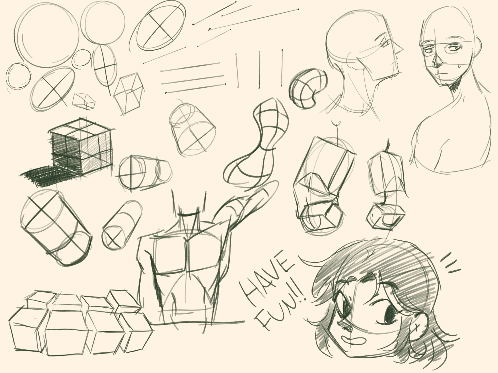

Practice Exercises
Drawing is a skill that develops through practice, patience, and experimentation. These exercises are designed to help you strengthen your fundamentals while encouraging you to explore your creativity.
You don't have to complete every exercise in one sitting! Choose an activity that interests you and practice at your own pace. Even a few minutes of drawing can be a valuable learning experience.
1. Line Control
Suggested Time: 5–10 minutes
Practice drawing straight lines, curved lines, and ellipses to improve your confidence and control.
- Draw two dots on a sheet of paper.
- Connect them with a single confident stroke.
- Repeat with different distances and directions.
- Practice drawing circles and ellipses using smooth, continuous motions.
Focus on making deliberate strokes instead of repeatedly correcting each line.
2. Shapes and Construction
Suggested Time: 10–15 minutes
Learning to construct objects using simple shapes can help you understand how forms occupy three-dimensional space.
- Draw several boxes, spheres, and cylinders.
- Rotate them by imagining different viewpoints.
- Combine these forms to create a simple object.
- Add construction lines to help visualize their orientation.
3. Gesture Drawing
Suggested Time: 10 minutes
Gesture drawing helps artists capture movement, energy, and the overall flow of a pose.
- Find a reference photograph of a person in an interesting pose.
- Set a timer for 30–60 seconds.
- Sketch the main line of action and larger movements.
- Repeat with several different reference poses.
Avoid getting caught up in details. Focus on the overall gesture!
4. Shading and Values
Suggested Time: 10–15 minutes
This exercise helps you understand how light and shadow give objects a sense of depth.
- Draw a cube, sphere, or cylinder.
- Choose a direction for your imaginary light source.
- Identify which surfaces should appear lighter or darker.
- Add shading and a cast shadow.
Try changing the light direction and see how the shadows change.
5. Figure Construction
Suggested Time: 15–20 minutes
Practice simplifying the human figure into basic three-dimensional forms.
- Choose a reference photograph of a person.
- Establish the gesture and overall direction of the pose.
- Construct the ribcage and pelvis using simplified forms.
- Add limbs using cylinders and tapered shapes.
- Check the figure's overall balance and proportions.
Remember to Have Fun!
Practice is important, but drawing shouldn't feel like a constant test. Give yourself permission to make mistakes, experiment with new ideas, and create things simply because you enjoy them.
Progress takes time, and every drawing teaches you something. Keep creating, stay curious, and remember that every artist starts somewhere!
